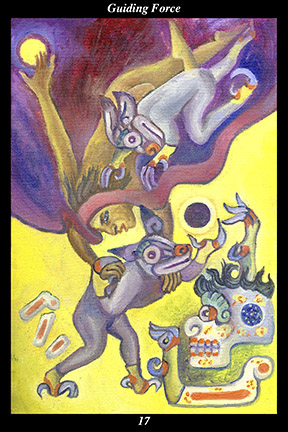

 | IMAGEAbove, a male warrior descends through twilight, reaching for the light of the daytime sun. Clinging to his back is his shadow, who he carries with him. Below, his shadow reaches for a black sun as he walks through a bright place of scattered bones and approaches a living skeleton. In this place, the warrior clings to the back of his shadow, who carries him and guides him through the unfamiliar landscape. |
INTERPRETATION
This hexagram depicts a journey into uncharted territory. The male warrior symbolizes the way of testing and training human nature that increases its versatility and fortitude. Descending through the twilight means that you take leave of the world of known and familiar experience. Reaching for the daytime sun means that you begin the journey believing that past experience can guide you through this new time. Carrying the shadow means that you have another half, a twin, that accompanies you everywhere, yet is so close and familiar to you that its presence is taken for granted. The shadow reaching for the black sun means that your other half is guided by a different, invisible, kind of light. Walking through a bright place of scattered bones means that your other half feels at home in the land of the ancestors, whose nocturnal sun turns the night to light. Approaching the living skeleton means that your other half visits with the spirit that does not die in order to return to the realm of the daytime sun with new knowledge and understanding. Being carried and guided by the shadow means that you increasingly trust the mysterious and hidden half of yourself to lead the way through unfamiliar and unforeseen experiences. Taken together, these symbols mean that you keep your bearings in even the most disorienting and confusing of times by believing in the strength, wisdom, and resourcefulness of your companion spirit.
ACTION
The masculine half of the spirit warrior follows the guide when passing through times of crisis and change. While our day-to-day practice involves honing our ability to make insightful judgments and far-sighted decisions, there are times when the trials facing us are greater than the strength and knowledge we have accumulated over the course of this lifetime. At times like this, it is necessary to change our orientation: rather than pursuing our conscious decisions and goals, now is the time to follow up on coincidences and listen to our dreams. Facing in a new direction is not easy, however, since it means breaking habits of thought and feeling that have accrued over a long time. For this reason, it is necessary to rely on the transcendent intelligence of your spiritual ally, whose assistance is proof that selflessly benefiting others is the path of the evolving individual. By following your spiritual twin into new arenas at this time, you reach the goal you would have missed had you sought it directly.
INTENT
When a situation is beyond our control, our unconscious connection to spirit keeps us from getting lost. External change transforms us internally—and because change is constant, we are in a perpetual state of transformation. There is, however, another part of us that never changes, an essence that leaves the body just as it entered it. Difficult to find when sought, it emerges spontaneously when most needed: we look through our guide’s eyes when we see the unchanging harmony underlying the world of appearances. Independent of the social and cultural upbringing that determines so much of how we experience the world and respond to it, this essence is like a spark of the spiritual sun—arrived here from the source of light and life and love, it guides us through dark times, comforts us in fearful times, and draws us closer in solitary times. External change transforms us internally—and because every transformation forces us to consider leaving some part of ourselves behind, every change reminds us of the great leave-taking at death. It is our spirit ally who maintains contact with the spirit world, providing us with the means to experience the wisdom and love of our predecessors. The closer we move to leaving this realm and entering the realm of the ancestors, the better we understand the importance of the two realms being governed by the same vision of universal peace and well-being: we feel with the twin’s heart when we know that the realm of the living and the realm of the dead are in reality one and the same realm of spirit.
SUMMARY
Because you maintain great inner flexibility and adaptability, you pass through even the most trying and confusing of times without losing your bearings. Trust your hidden potential to come forth when needed and help solve problems beyond your conscious ability. Do not place limits on the limitless, do not lose touch with your own miraculous nature. Step into the flow of spirit’s intention and it will carry you into the ecstatic life.
THE LINE CHANGES
1° There are those close to you whose contribution will make the endeavor successful. The kindness you have shown them in the past creates an atmosphere of trust and willing sacrifices. The values you hold in common make possible the
benefit you both will enjoy from this collaboration.
2° The window of opportunity opens—the situation is complex and the path to the goal intricate. But you are in the right place at the right time with the right skills and the right allies. Move now with the utmost confidence, scooping up others’ terrain like chess pieces.
3° This is a minor setback—given the circumstances, you should have seen it coming. Take it in stride, demonstrating an inner sense of self that is impervious to external failure, defeat, or rejection. Show your mettle and the next break will fall your way.
4° Things are stable and going well but do not take them for granted. Maintain good relations with those around you, treating each with politeness and warm-hearted affection. Do not sow the seeds of your own hardships by treating others poorly.
5° Your reputation for competence, judiciousness, and beneficial action spreads. Others will come of their own accord to form partnerships. Be gracious to all but accept only those whose character and resources actually advance the cause.
6° Things have run their course—hand over the reins to others and move on to other less trying matters. Savor the joy of having had such a glorious journey and do not regret that it comes to an end. Hanging on at this point would be humiliating and threaten much of what you have created.